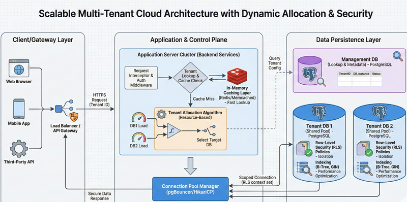

- Designed & Implemented a resource-usage–optimizing dynamic tenant allocation algorithm to distribute tenants across multiple DBs
- Designed a centralized lookup DB to automate pooled, RLS-protected tenant DB provisioning, benchmarking and tuning serverless DB concurrency via k6 load testing.
- Implemented indexed lookup and caching of URIs to reduce request latency by ~40%
- Implemented connection pooling to reduce cold-start overhead from ~90ms to ~4ms
- Deployed to Neon (serverless) DB to save costs, compared to AWS RDS
The project doesn't have a frontend and is not open-source
Here is the architecture of the project: 